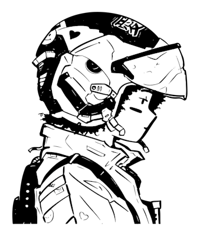
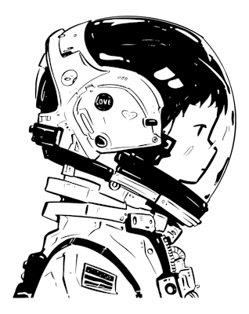
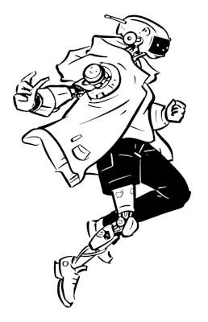
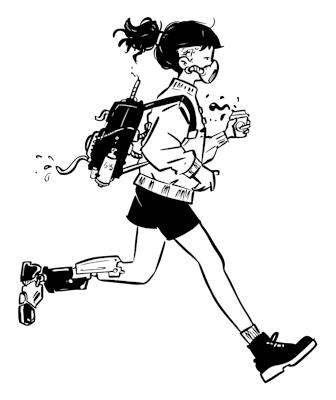

01
Programming
Python, Java, JavaScript, SQL, C++, C#


Hi, I’m Sukhman
I build and test reliable software, explore data for insights, and solve real problems with clean, thoughtful solutions.
↓Toolkit
A mix of software, data, and testing tools I use for projects, debugging, dashboards, and making things more reliable.
01
Python, Java, JavaScript, SQL, C++, C#
02
Selenium, PyTest, JUnit, Postman, manual QA
03
Pandas, NumPy, Excel, Power BI, dashboards
04
Git, GitHub, VS Code, Docker, documentation
Selected Work
Built a secure messaging project that handled encrypted text, message validation, and reliability across multiple client interactions.
Reduced failed message transfers by 35%.
Created a finance analytics dashboard using prediction models, trend analysis, and visual reporting to make market patterns easier to read.
Reached 93% prediction accuracy in model testing.
Processed text data to classify sentiment, find patterns in feedback, and turn unstructured comments into usable insights.
Analyzed 20,000+ text entries.
Built a student-focused platform to help SFU students find campus resources, connect with tools, and access useful information faster.
Tested with 100+ student interactions.
About Me
Whether I’m building a feature, testing an API, or cleaning up data, I care about making things clear, reliable, and useful. I enjoy the process of figuring things out, improving the small details, and building work that actually helps people.

A Little More
I like turning ideas into useful software and learning something from every project I work on. I’m someone who enjoys solving problems, understanding how things work, and making systems feel smoother and easier to use.
Work Experience
A mix of technical experience where I’ve worked with data, testing, software reliability, and AI-focused problem solving.

Starting in January 2027, I’ll begin my position as an AI Engineer Intern at Shared Services Canada under the Government of Canada, where I’ll gain hands-on experience with responsible AI, technical problem-solving, and building solutions that support real public-sector work.
Worked with data and analytics to understand patterns, organize information, and support better decision-making. This helped me build stronger experience in data cleaning, analysis, reporting, and communicating insights clearly.
I have experience in testing-focused computer science work, including checking software behavior, finding bugs, validating features, and thinking through edge cases. This gave me a stronger QA mindset and helped me understand how to build software that is not just functional, but reliable.
Won a hackathon by helping build and present a working project under time pressure.
Built fast, worked with a team, and helped turn an idea into something demo-ready.
Earned an A- average in data analysis coursework while working with trends, patterns, and insights.
Comfortable turning messy data into cleaner summaries and useful conclusions.
Achieved a 4.13 average across Calculus I, II, III, and MACM 101.
Built a strong base in problem solving, logic, and technical thinking.
Supported student hackathons and tech events through planning, setup, and community support.
Helped create a better experience for students building and learning together.